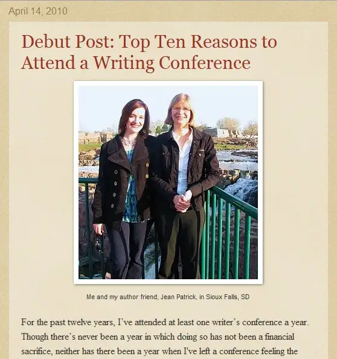
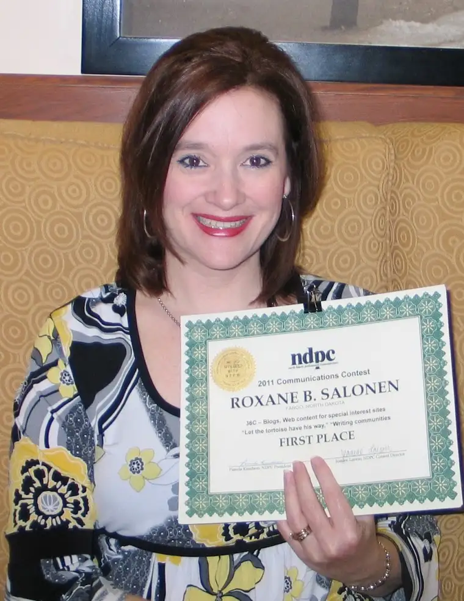

A year ago, I presented my debut post on my new writing blog (this blog!), Peace Garden Writer:
 |
| Debut post for Peace Garden Writer, April 14, 2010 |
{kind=link}
I just went back and re-read that post and it was as if I were reading it for the first time! It brought me back a year ago to that conference in Sioux Falls, SD, where I sat in a hotel room with my writing buddies and tossed around ideas for blog names and subtitles for this blog. It was an important time in my life as a blogger and writer; a time of stepping more boldly forward with my professional work and separating it slightly from my life as an at-home writer-mother. It seemed like something of an experiment, too.
And how has the experiment gone? As the writer and creator of this blog, I can only speak for myself and say that I have truly enjoyed having this space to come to each week to hang out with my writing friends and others interested in any facet of the writing life. There has been something meaningful to me in separating out these aspects of my life and creating a distinct home for my writing thoughts. I’ve truly enjoyed the exchanges that have taken place here. I wanted Peace Garden Writer to be a nurturing place to visit; I hope I’ve succeeded to some degree.
One measure of whether I may have done so presented itself to me this past weekend at the North Dakota Professional Communicators spring conference in Grand Forks, ND. There, I was awarded my first professional award related to my blog writing when Peace Garden Writer received first-place honors in a communications contest for specialized blogs. This was a delightful surprise, one my daughters were present to watch (we made it a girls’ weekend). My youngest daughter captured the moment here:
 |
| 1st-place award for Peace Garden Writer |
{kind=link}
I also received first place for a speech I presented to a local mothers’ faith group in November, as well as some awards for my columns and other communications work. The first-place awards are headed to nationals. The competition stiffens there, so I don’t know whether they’ll get any further, but it is fun to have your work acknowledged.
But really, if I didn’t have readers to write for and fellow writers and bloggers with whom I might connect, this wouldn’t have happened. I think that’s why winning an award for my blog was such a thrill. When I went up to accept my award, it was as if I were bringing a little piece of all of you along.
Thank you for hanging with me this past year. Year One has been a joy for me. I’m looking forward to Year Two!
Q4U: What are some ways you measure your success as a writer?